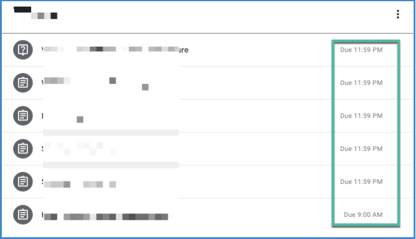
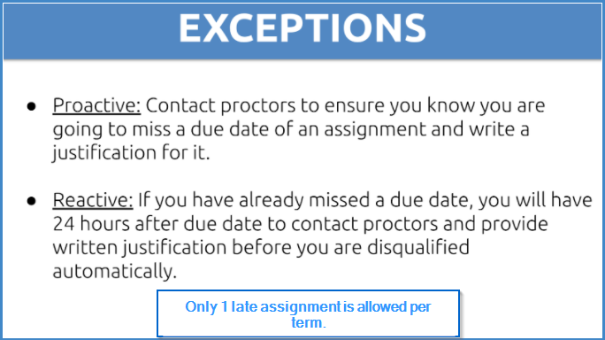
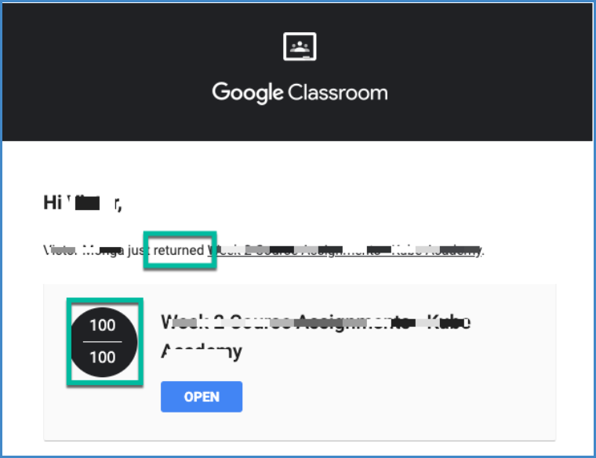
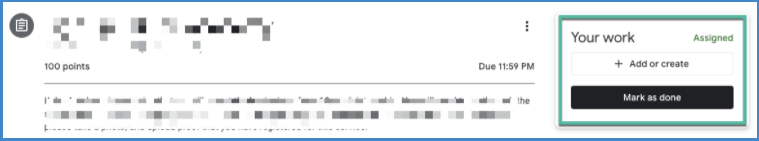

ZERO Tolerance Harassment Policy: Don't direct message any intern on any platform. Violators will be disqualified, blacklisted and reported.
Assignments are due on Wednesday at 11:59 pm PST.
Due dates are also visible in your local time zone in google classroom per assignment. Optionally, you can click on google calendar to see assignment due dates from the classroom view.
You can choose either a proactive or reactive exception option.
According to VT internship policies, every intern must complete assignments on time or will be disqualified. However, it is an at-will internship which means you can gracefully leave by creating a help desk ticket. You can always apply for future internships.
If you know ahead of time, you can proactively send a message to a proctor to let them know that your assignment will be late and the reason for the late submission. If you have already missed a due date, you will need to contact a proctor within 24 hours and provide a written justification before you are automatically disqualified.
Reminder: only 1 miss is allowed per term.
Rankings are just for fun to be used only in bot-commands channels.
bot-commands channel is to interact with bots. Typing bots commands in other channels is prohibited.
Click here for timings.
After grading your assignment, proctors return it for you to have a confirmation that your assignment has been reviewed and graded.
All assignments must be “turned in” within google assignment to receive credit for assignment.
It is an at-will internship which means you can gracefully leave by creating a help desk ticket. You can always apply for future internships.
This has been discussed in detail during orientation call. You can watch it here:
Passcode: 0+mj8i3%
Passcode: 0+mj8i3%
No, however it will expand your professional network and gain you visibility by recruiters or headhunters. Follow VT Linkedin guidelines posted here: Click Here
Join LIVE weekly calls to have interactions with support staff and VT founders OR Submit a help desk ticket here at VT help desk.
Submit a help desk ticket here at VT help desk.